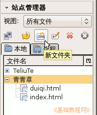
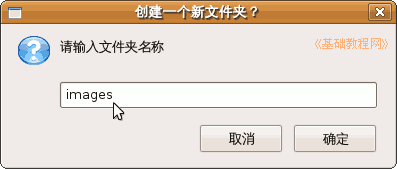
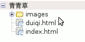
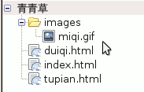
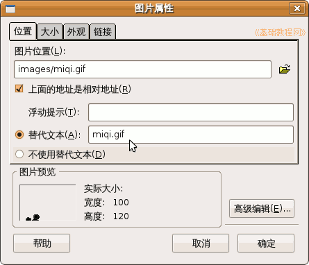

，刷新一下青青草站点，看一下images文件夹，
，刷新一下青青草站点，看一下images文件夹，KompoZer 操作基础教程
作者：Teliute 来源：基础教程网
五、插入图片 返回目录 下一课在KompoZer中可以很方便地插入图片，只要把图片复制到站点中，然后拖到网页里面就可以了，下面我们来看一个练习；
1、启动KompoZer
1）点左上角菜单“应用程序－编程－KompoZer”，就可以启动KompoZer程序；
2）点菜单“格式－页面标题”，修改标题为“插入图片”，然后点菜单“文件－保存”命令，以“tupian.html”保存到qqc文件夹中；
2、插入图片
1）在站点侧栏中，点新建文件夹按钮，在出来的对话框中输入 images，这个文件夹也在 qqc 里，用来存放图片；
  
2）最小化 KompoZer，然后找一个图片，复制到 qqc 文件夹的 images 里，注意文件名要英文的，
3）再回到KompoZer窗口中，点网站栏的“刷新”按钮，刷新一下青青草站点，看一下images文件夹，

这儿点两下文件夹前面的加号也可以起刷新作用；
4）把images里面的图片文件miqi.gif，拖到右边的窗口里面，就可以插入进来了；
保存一下文件，点“浏览”按钮，看一下图片效果；
5）也可以用菜单“插入－图片..”命令，点“浏览”按钮找到一幅图片，输入替代文字；

6）需要注意的是，图片要先复制到images文件夹里，另外必须使用英文文件名；
本节学习了在KompoZer中插入图片的基本方法，如果你成功地完成了练习，请继续学习下一课内容；
本教程由86团学校TeliuTe制作|著作权所有
基础教程网：http://teliute.org/
美丽的校园……
转载和引用本站内容，请保留版权信息和本站链接。